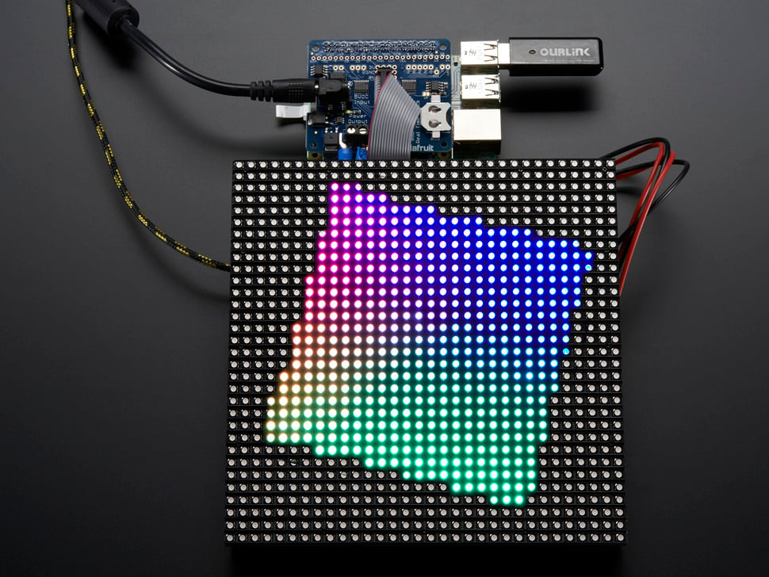

Projects

LED Lights With Raspberry Pi
Designed and implemented a custom LED lighting system using Raspberry Pi for automation and control. Programmed the Raspberry Pi with Python to manipulate LED patterns, colors, and brightness, using GPIO pins to interact with the hardware. Developed a user interface to control the lights remotely, showcasing knowledge of both hardware and software integration. This hands-on project enhanced skills in embedded systems, electronics, and Python programming.
View Project
